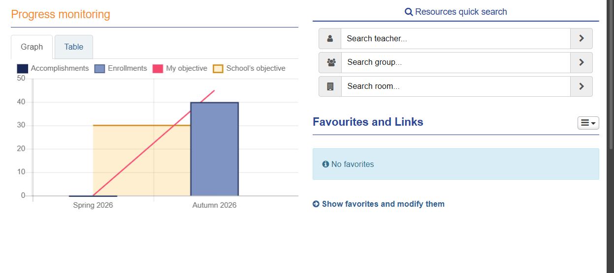

This page contains useful IT tools and services that help students with their studies at TAMK.
Pakki is used to manage studies, check grades, follow study progress and create a personal study plan.

Moodle is an online learning platform where students can find course materials, complete assignments and submit their work.
Microsoft 365 includes Word, Excel, PowerPoint, Outlook and OneDrive. These tools are useful for assignments, communication and group projects.
Lukkarikone helps students create and check their study timetables.
Tuudo is a mobile application that provides study-related information and student services.
GitLab is used to store code, manage Git repositories and collaborate on software projects.
I have learned how to use different digital tools to organize my studies and complete assignments. I find Moodle, Pakki and Microsoft 365 especially useful.